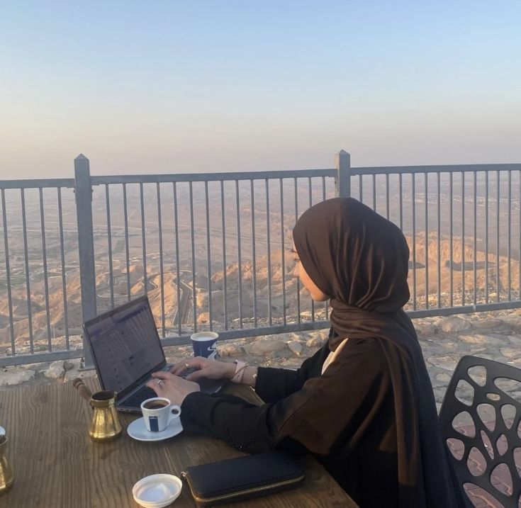
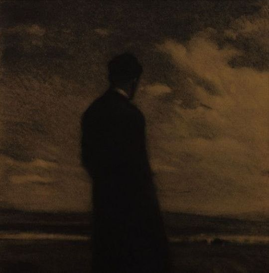
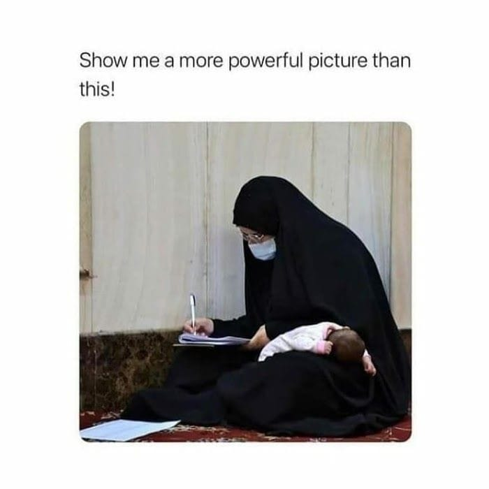

♦ put a post
♦ Nada Elssayed ♦ a week ago
كل عام والأمة الإسلامية بخير 💝 💝

♦ R. Elsayed ♦ 15hrs ago
♦ R. Elsayed ♦ 2 days ago
ونعمة باللّه العلي العظيم
♦ sponsorship


♦ Omar Elshazly ♦ 6 months ago
♦ Nada Elsayed ♦ a year ago
the betrayal
♦ mohamedsobhy3348 ♦